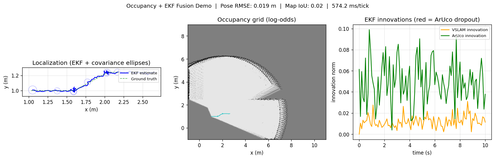
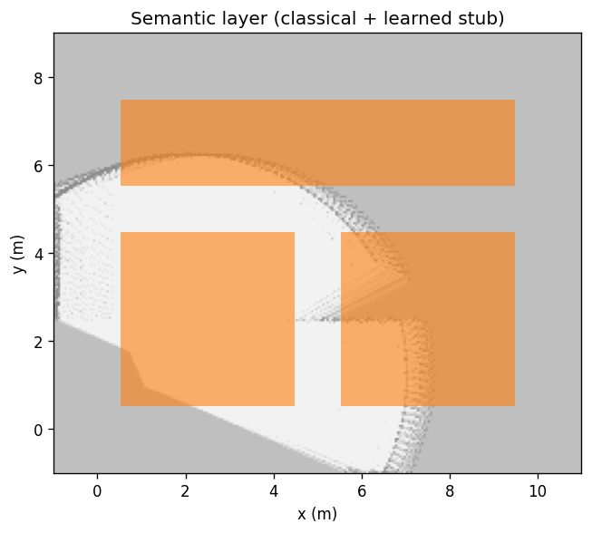

An EKF localization stack fused with a log-odds occupancy grid and a semantic layer. It keeps a GPS-denied indoor robot localized and mapping while individual sensors drop in and out — the multi-sensor fusion and failover problem I worked on in a teleoperation system, rebuilt on a simulated corridor here so every part of the behavior is reproducible and inspectable. The perception core is framework-independent; a ROS2 node layer wraps it for simulation and, eventually, hardware.
Problem
A GPS-denied indoor robot needs both a metric map and a reliable pose. Fiducials give sparse absolute fixes; visual odometry gives dense motion but drifts; LiDAR and sonar build geometry; semantic tags support planning beyond binary occupancy. No single sensor is sufficient, and any of them can drop out mid-run.
Approach
Localization. A 3-DoF EKF (unicycle motion model, analytic Jacobians) runs sequential updates: predict once per tick, then a VSLAM update, then a fiducial update when a marker is visible. Measurement covariance is adaptive — visual-odometry trust falls with fewer features or higher reprojection error; fiducial trust falls with smaller marker size in frame. The covariance update uses the Joseph form for numerical stability, and innovations are angle-wrapped.
Failover. A dropped fiducial is simply a skipped update, not special-case logic — the filter coasts on motion and odometry and recovers when the marker returns. That graceful degradation is the property the whole design is organized around.
Mapping. A Bayesian log-odds occupancy grid updates from ray-cast LiDAR and sonar (free along the ray, occupied at the endpoint), with additive updates and clamping. A hybrid semantic layer combines classical region rules with a learned stub for local refinement.


Results
Measured in a simulated corridor with a fixed seed.
| Pose RMSE (101 ticks) | 0.019 m |
| Map cells updated | > 12,000 |
| Mean tick latency | 574 ms (Python, CPU) |
| Fiducial dropout | VSLAM-only fusion, no failure |
| Unit + integration tests | 10 / 10 passing |
Design choices & honest limits
EKF over a cost-function blend for v0, because explicit Jacobians, covariance ellipses, and innovation plots make the behavior legible. Localization-only (landmarks are not in the state vector; the known fiducial map provides anchors), which is simpler than EKF-SLAM and matches the original system. Core algorithms are pure importable Python; the ROS2 nodes are thin adapters only.
Known limits, stated plainly: the visual odometry is a noise model rather than a real front end, and the world is a 2D flat-floor simulation. One deliberate simplification worth naming: VSLAM enters the filter as an absolute-pose pseudo-measurement composed from the previous filtered pose, which correlates it with the prior and makes the filter mildly overconfident on visual odometry; a relative measurement model or stochastic cloning is the cleaner formulation. The ROS2 layer currently targets simulation — a Nav2 costmap bringup and a real LiDAR demo are the next steps, along with a pose-graph variant.